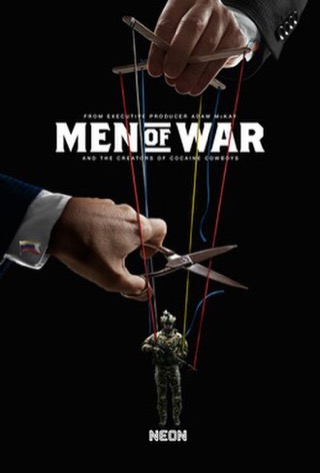

About the film

An insider account of the failed 2020 coup in Venezuela, as told by former US Army Green Beret Jordan Goudreau, a three-time Bronze Star recipient who organized the ill-fated mission. A harrowing look into the realpolitik world of exiled leaders, private armies and shadowy intelligence operatives and what made one man believe he could change the course of a nation's history.
At the festival
- 2024 Opening Night · Thursday, November 7, 2024 · 6:30 PM · The Johns Hopkins University Bloomberg Center (Theater)Followed by post-screening discussion with co-director Jen Gatien, moderated by Laura Blumenfeld of Johns Hopkins School of Advanced International Study.
More films on these topics
- An Unknown SubstanceSteven Leckart2026 · 39 min
- Short Strand: Against the GrainSteven Leckart, Maia Wikler2026
- Short Strand: Minneapolis: On the Record + A Special ScreeningLaura Poitras, Rachel Lauren Mueller, Annie Sundberg2026
 KhartoumIbrahim Snoopy Ahmad, Timeea Mohamed Ahmed, Rawia Alhag2025 · 82 min
KhartoumIbrahim Snoopy Ahmad, Timeea Mohamed Ahmed, Rawia Alhag2025 · 82 min Relentless MemoryPaula Rodriguez Sickert2024 · 93 min
Relentless MemoryPaula Rodriguez Sickert2024 · 93 min Myanmar DiariesThe Myanmar Film Collective2022 · 70 min
Myanmar DiariesThe Myanmar Film Collective2022 · 70 min